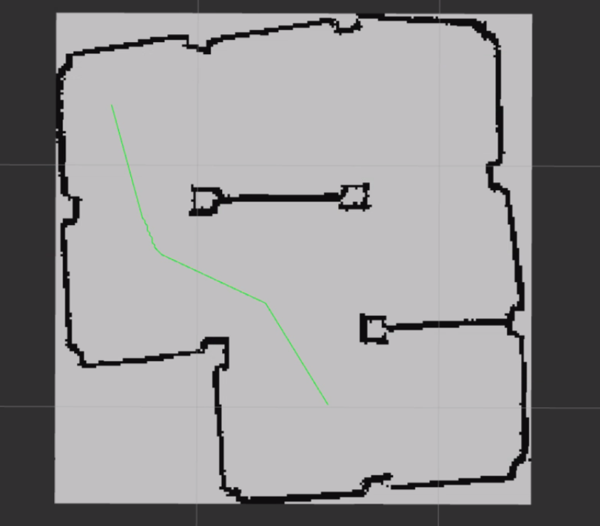
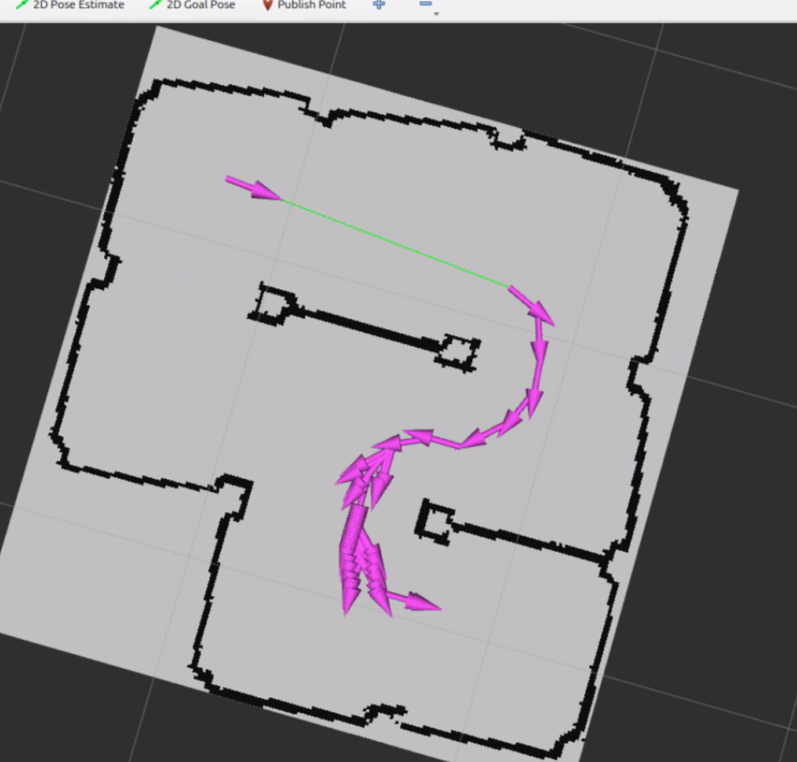
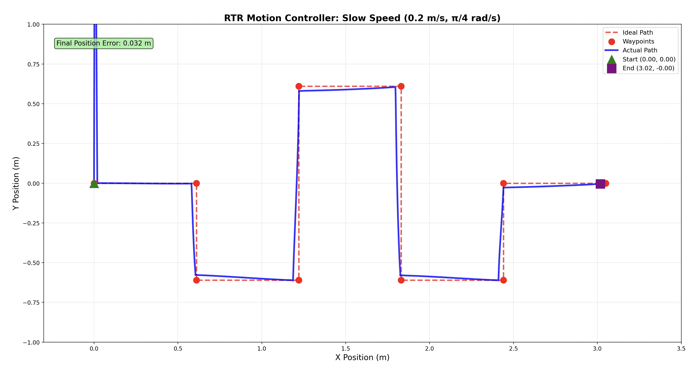

MBot Autonomous Navigation
Built a full autonomous navigation stack for the MBot differential-drive robot across three checkpoints — from low-level motion control and odometry through particle-filter SLAM, finishing with full A* path planning and obstacle-aware autonomous navigation. Implemented entirely in C++ with ROS2 as part of EECS 467 (Autonomous Robotics with Design Experience) at the University of Michigan.
Checkpoint 3 — A* Path Planning & Autonomous Navigation
The capstone checkpoint: given a pre-built occupancy grid map, the robot plans collision-free paths to goal poses using A* search over the grid, then executes them autonomously using the SLAM localizer from Checkpoint 2. The nav demo below shows the full pipeline running end-to-end.


Checkpoint 3 Report
Can't see the embed? Open PDF →
Checkpoint 1 — RTR Motion Controller & Odometry
Implemented a rotate-translate-rotate (RTR) motion controller that sequences precise turns and straight segments to follow waypoint paths. Odometry is dead-reckoned from wheel encoder ticks and validated against ground-truth waypoints; the plots show actual vs. ideal trajectories at two speeds.


Checkpoint 1 Report
Can't see the embed? Open PDF →
Checkpoint 2 — SLAM: Mapping & Localization
Implemented simultaneous localization and mapping from scratch in C++: a 2D occupancy grid built
incrementally from LIDAR scans, an odometry-based action model with calibrated noise, a beam-model
sensor model, and a particle filter for real-time localization. The localizer handles loop closure
and recovers from momentary sensor drop-outs. Code covers the full SLAM pipeline including
mapping.cpp, particle_filter.cpp, sensor_model.cpp,
action_model.cpp, and obstacle_distance_grid.cpp.
Checkpoint 2 Report
Can't see the embed? Open PDF →
Stack
C++ · ROS2 · MBot (differential drive) · LIDAR · Wheel encoders · Particle filter · Occupancy grid SLAM · A* path planning · Gazebo simulation